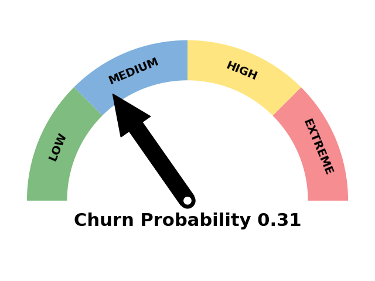

💫 Hi there! 👋 I'm Kipkemoi Vincent
I am a passionate Data Scientist, ML/AI Engineer & Data Analyst with expertise in transforming raw data into actionable insights and developing scalable data science/ ML solutions in production environments. With experience across fintech, environmental science, healthcare, and agri-tech, I build machine learning models, predictive systems, and analytical solutions that drive growth and optimize decision-making.
Currently based in Nairobi, Kenya, open to opportunities worldwide.
🎯 My Mission
I’m passionate about using AI and data science to tackle real-world challenges — from enhancing financial security through fraud detection to improving healthcare accessibility in underserved communities. I strive to build scalable, interpretable ML solutions that create lasting impact.
🤝 Collaboration & Communication
Skilled at working in diverse teams, translating complex technical concepts for non-technical stakeholders, and applying agile project management to deliver impactful solutions.
🎓 Education
- MPhil in Environmental Science: The Cyprus Institute, Nicosia Cyprus.
- MSc in Mathematical Sciences(Data Science) : University of Western Cape/AIMS, Cape Town, South Africa.
- BSc. Mathematics: University of Nairobi, Nairobi, Kenya.
📋 Professional Summary
- 5+ years experience delivering Data Science and ML solutions across sectors (Fintech, Climate, Healthcare).
- Skilled in data analytics, predictive analytics, credit risk analysis, anomaly & fraud detection, credit scoring, time series forecasting, and scalable ML model deployment.
- Proficient in Python, R, SQL, Scikit-learn, CNN, OpenCV, TensorFlow, RF, LSTM, Catboost, XGBoost, LightGBM, PyOD models and AWS.
- Experienced with MLOps workflows: streamlit, Docker, Kubernetes, MLflow, FastAPI, and CI/CD pipelines.
- Committed to leveraging advanced analytics for risk minimization, business growth, and social impact.
📋 Tech Stack

💼 Featured Projects
🏥 Healthcare Accessibility in Nairobi
In 2015, the United Nations introduced the Sustainable Development Goals (SDGs), a global framework aimed at tackling critical issues such as poverty, hunger, climate change, and health. Among these, SDG 3: Good Health and Wellbeing is especially vital because health underpins many other development goals by influencing economic growth, education, and social stability. This goal’s broad focus—from reducing maternal and child mortality to combating epidemics and promoting mental health—highlights the essential role that good health plays in creating sustainable, resilient communities worldwide.

Kenya integrates this global agenda within its Vision 2030 plan, which seeks to transform the country into a middle-income economy with better living standards, emphasizing equitable and efficient healthcare. Nairobi, as the economic and demographic hub, faces unique urban health challenges, especially for vulnerable populations in informal settlements. Despite progress through reforms like the Social Health Authority and moves toward Universal Health Coverage, Nairobi still grapples with disparities in healthcare access and quality. This report uses detailed data to analyze these gaps, revealing critical areas needing improvement such as maternal care and 24-hour service availability, and offers targeted recommendations to guide policymakers toward achieving SDG 3 in Nairobi and beyond. 👉 Read the full project on GitHub or Medium
🛡️ Anomaly and Fraud Detection in Finance
Anomaly detection in financial markets is essential for identifying unusual patterns that may indicate fraud or other risks, especially as financial data becomes more complex and voluminous. Traditional methods often fall short in handling this scale and diversity, which has led to the adoption of advanced tools like PyOD and Microsoft AutoML (FLAML). PyOD offers a wide range of specialized algorithms, including statistical and machine learning techniques such as Isolation Forest and Autoencoders, that effectively detect anomalies in various financial metrics. Meanwhile, Microsoft AutoML powered by FLAML automates model selection and hyperparameter tuning, enabling faster and more accurate anomaly detection with less manual effort. Together, these technologies help financial institutions improve risk management and protect assets with greater precision and efficiency.

This work focuses on detecting credit card fraud using an imbalanced dataset from Kaggle, where transactions are labeled as authentic or fraudulent. Various PyOD and FLAML models were evaluated to identify anomalous transactions, with different data balancing techniques like undersampling, oversampling, and SMOTE applied to address the class imbalance. Instead of relying solely on accuracy, the evaluation employed more robust metrics such as Precision, Recall, F1-score, and ROC-AUC, which are better suited for imbalanced datasets. This comprehensive approach aims to enhance the detection of fraudulent activities and provide more reliable insights for financial fraud prevention. 👉 Read the full project on Github or Medium
🤖 Lending Automation - ML for Credit Scoring
The automation of lending decisions through machine learning is revolutionizing the financial sector by replacing slow, manual, and often biased processes with fast, scalable, and data-driven alternatives. Traditional methods have been limited by inefficiencies and inconsistencies, which particularly affected underserved groups. Machine learning models can analyze extensive borrower data within seconds—demographics, credit history, behavioral traits—leading to more accurate risk assessments and faster approvals. This level of automation reduces human error, cuts operational costs, and allows lenders to process large volumes of applications simultaneously, making it especially beneficial for fintech firms and digital lenders aiming for rapid service delivery.

This project aims to implement and compare the effectiveness of three prominent machine learning algorithms—Random Forest, XGBoost, and LightGBM—in automating loan decision-making. By analyzing real-world credit data, the project focuses on optimizing predictive performance, reducing false approvals or rejections, and improving decision speed and fairness. Tasks include data preparation, feature engineering, model training, performance evaluation, and deployment. Ultimately, the system is designed not only to boost accuracy and operational efficiency but also to support personalized lending and dynamic pricing strategies. This approach positions automated credit scoring as a strategic advantage in achieving profitability, customer satisfaction, and regulatory compliance in a rapidly evolving financial landscape. 👉 Read the full project on Github or Medium
🌍 Air Quality Monitoring in Nicosia, Cyprus
Air pollution continues to pose significant risks to both environmental sustainability and public health, with harmful pollutants like carbon monoxide, nitrogen dioxide, ozone, and sulfur dioxide contributing to serious respiratory and cardiovascular issues. Conventional monitoring relies on reference-grade instruments, which, while highly accurate, are limited by their high cost and sparse spatial coverage—especially in urban areas with localized pollution patterns. To overcome these limitations, low-cost sensors (LCSs), particularly electrochemical ones, are increasingly adopted due to their affordability and portability. However, LCSs suffer from challenges such as signal drift, environmental sensitivity, and cross-gas interference, making their raw data unreliable for regulatory purposes without further calibration.

To address these shortcomings, this project investigates the use of machine learning (ML) for post-deployment calibration of LCS data, collected over six months in Nicosia, Cyprus. Five ML models—Linear Regression, Support Vector Regression, Random Forest, Artificial Neural Networks, and XGBoost—are compared to determine their effectiveness in correcting sensor inaccuracies and aligning readings with reference-grade data. The study also examines the impact of different sampling strategies, calibration frequencies, and the volume of training data on model performance. By evaluating calibrated outputs against EU and EPA standards, the project explores whether LCSs can be reliably used for indicative air quality monitoring. Additionally, it analyzes the influence of environmental factors and feature importance in improving sensor accuracy, offering valuable insights for future deployments and regulatory integration. 👉 Read the full project on Github or Medium
📉 Customer Churn Analysis and Prediction
Customer attrition, or churn, refers to the loss of clients over time and is a critical concern for businesses in subscription-based industries such as telecommunications, insurance, and online services. These companies rely heavily on customer retention strategies because acquiring new customers is significantly more expensive than maintaining existing ones. To combat attrition, many businesses use predictive analytics to identify at-risk customers early. By leveraging churn prediction models, they can prioritize outreach and design targeted retention campaigns aimed at preventing high-risk customers from leaving, ultimately improving long-term profitability.

This project focuses on using survival analysis and predictive modeling to understand and forecast customer churn. The goal is not only to build accurate churn prediction models but also to provide deeper insights into individual customer behavior. An interactive application will be developed to allow users to analyze specific customers, understand the factors contributing to their likelihood of churn, and estimate their expected lifetime value. This dual focus—on both prediction and interpretation—will support data-driven decisions for customer engagement and retention efforts. 👉 Read the full project on Github
💼 Full Projects Summary
| Project | Description | Tools Used |
|---|---|---|
| 🛡️ Anomaly and Fraud Detection in Finance | This project applies PyOD and Microsoft AutoML (FLAML) to detect anomalies in credit card transactions using a highly imbalanced dataset. A variety of algorithms—including Isolation Forest and Autoencoders—were tested for their ability to flag suspicious activity. To address imbalance, techniques like undersampling, oversampling, and SMOTE were applied. Evaluation focused on metrics like Precision, Recall, and ROC-AUC for a robust assessment. The outcome is a high-precision fraud detection pipeline that enhances financial risk management. 👉 Read the full project on Github or Medium | Python, Scikit-learn, LightGBM, FLAML, PyOD, LIME, SHAP |
| 🏥 Healthcare Accessibility in Nairobi | This project explores Nairobi’s progress toward achieving SDG 3: Good Health and Wellbeing, within Kenya’s Vision 2030 framework. Using demographic and healthcare facility data, it uncovers critical gaps in access, especially in informal settlements. Despite reforms like the Social Health Authority and efforts toward Universal Health Coverage, disparities remain in maternal care, emergency services, and 24-hour coverage. The analysis provides targeted recommendations to improve equity and service delivery. It serves as a model for urban health planning in other rapidly growing cities. 👉 Read the full project on GitHub or Medium | Python, Pandas, Matplotlib, Seaborn, Jupyter Notebook |
| 🤖 Lending Automation - ML for Credit Scoring | This project builds an end-to-end loan approval system using machine learning algorithms like Random Forest, XGBoost, and LightGBM. It replaces manual decision-making with faster, scalable, and data-driven processes for improved credit scoring. Key tasks include data cleaning, feature engineering, and model optimization using real-world loan data. Evaluation metrics ensure accuracy and fairness, reducing false approvals and rejections. The system supports personalized lending and dynamic pricing for better customer experience. 👉 Read the full project on Github or Medium | Python, Scikit-learn, RF, XGBoost, LightGBM |
| 🌍 Air Quality Monitoring in Nicosia, Cyprus | To improve urban air quality monitoring, this project calibrates low-cost electrochemical sensors using ML algorithms like XGBoost, Random Forest, and ANN. Raw sensor data, collected over six months, is aligned with reference-grade measurements. The study analyzes calibration frequency, data sampling strategies, and environmental factors like humidity and cross-gas interference. Results show that with proper calibration, LCSs can meet EU and EPA accuracy standards. This opens doors for cost-effective, citywide monitoring networks. 👉 Read the full project on Github or Medium | Python, Scikit-learn, XGBoost, Random Forest, Data Analysis, Jupyter Notebook |
| 📉 Customer Churn Analysis and Prediction | This project predicts customer churn using survival analysis and machine learning to identify clients likely to leave. It focuses on telecom-style use cases where retaining customers is more cost-effective than acquiring new ones. By analyzing historical behavior and risk factors, it enables targeted retention campaigns. An interactive tool is also developed to assess individual churn risk and lifetime value. This helps businesses make data-driven decisions to reduce attrition and improve customer loyalty. 👉 Read the full project on Github | Python, Flask, Scikit-learn, SHAP, Cox Proportional Hazards Model, Survival Analysis |
| 📊 Sales Time Series Analysis | This project analyzes historical sales data using time series forecasting techniques to uncover trends, seasonality, and patterns that drive business performance. By leveraging models like ARIMA, SARIMA, and Prophet, it enables accurate sales forecasting to support inventory planning, resource allocation, and strategic decision-making. The pipeline includes data preprocessing, stationarity testing, model tuning, and performance evaluation. The insights generated help optimize operations and reduce forecasting errors. 👉 Read the full project on Github | Python, Pandas, Statsmodels, FBProphet, ARIMA, SARIMA |
| 💻 Machine Learning Loan Application Web App | This project delivers a full-stack web application for automated loan approval using machine learning models. Built with Streamlit and powered by Random Forest and Logistic Regression, the system predicts loan eligibility based on user input. The backend includes data preprocessing, model training, and evaluation, while the frontend ensures a seamless user experience. It streamlines loan applications by replacing manual reviews with instant, data-driven decisions. 👉 Read the full project on Github | Python, Scikit-learn, Streamlit, Random Forest, Logistic Regression, Flask |
| 🚀 Active Learning API (Django + CatBoost) | This project implements an active learning backend system to optimize data labeling for machine learning tasks. It intelligently selects the most informative samples for annotation, reducing labeling effort while improving model performance. Built with Django and integrated with machine learning models (e.g., CatBoost), it supports iterative learning cycles, model versioning, and anomaly detection. Key features include dataset management, active query strategies, and seamless MLflow tracking. 👉 Read the full project on Github | Python, Django, CatBoost, MLflow, Active Learning, REST API, SQLite |
| 🩺 COVID-19 Detection Using CT Scans | This project applies deep learning to detect COVID-19 from chest CT scans using convolutional neural networks. Models like ResNet50, DenseNet169, and MobileNetV2 are trained and fine-tuned for accurate image classification, achieving high detection accuracy through transfer learning and ensemble methods. The pipeline includes image preprocessing, augmentation, and evaluation with real-world datasets. The system supports rapid and reliable diagnosis, aiding medical decision-making. 👉 Read the full project on Github | Python, TensorFlow, Keras, CNN, ResNet50, DenseNet169, MobileNetV2 |
| 🧠 Brain Tumor Detection Using Deep Learning | This project leverages deep learning to detect brain tumors from MRI scans using advanced convolutional neural networks. It employs architectures like MobileNetV2, DenseNet169, and ResNet50, enhanced through transfer learning and ensemble techniques to achieve up to 99.8% accuracy. The workflow includes image preprocessing, model training, and performance evaluation, enabling fast, accurate, and scalable tumor classification to support early diagnosis and clinical workflows. 👉 Read the full project on Github | Python, TensorFlow, Keras, CNN, MobileNetV2, ResNet50, DenseNet169, FLAML |
💻 GitHub Statistics
Here are my GitHub stats as of now:
|
|
|
|
|
|
🏆 GitHub Trophies
📊 GitHub Stats
Vinylango25 Stats |
Vinylango Stats |
📜 Random Dev Quote
🚀 Let's Collaborate!
I am open to working on AI, ML, data science, and fintech projects.
💬 Reach out to me for exciting collaborations!
 LinkedIn Profile
LinkedIn Profile
📫 Email: vincentl@aims.ac.za / vinylango90@gmail.com